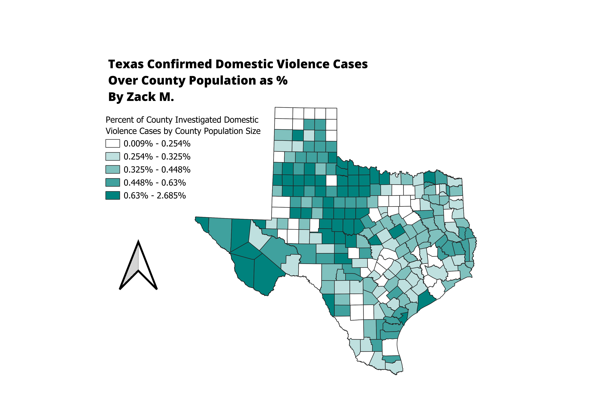

Homework 7
Zack M.
This map represents the investigated domestic violence cases by county in Texas. I normalized the data found from the Texas
Open Data Portal by dividing it by the total population size. This domestic violence data was collected by the Texas Department
of Family and Protective Services. It required significant work in Excel to normalize the data, as I needed to create a pivot
table to sum all the values, then normalize the data by removing commas, and finally calculate a percentage value in QGIS.
This data is important as it shows trends in domestic violence based on geography, which could play a role in people's mental
health and thereby influence domestic violence cases.
>

Link to shapefile
CSV dataset
https://data.texas.gov/dataset/APS-3-3-Investigations-Findings-of-Abuse-By-County/9757-dc87